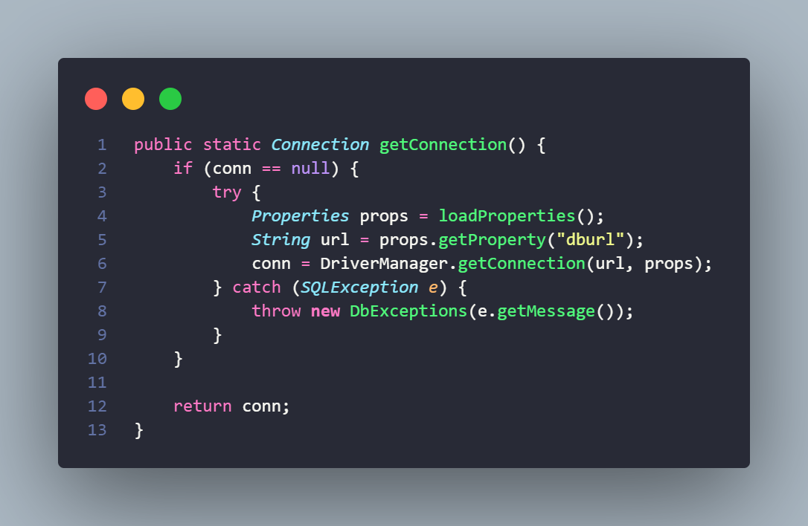
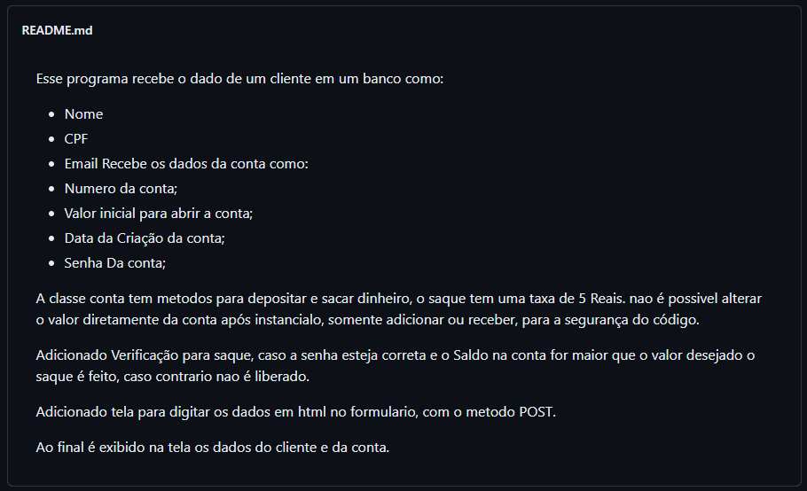
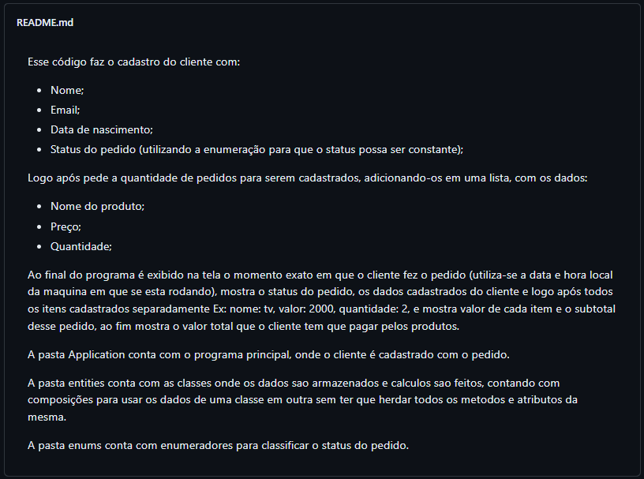
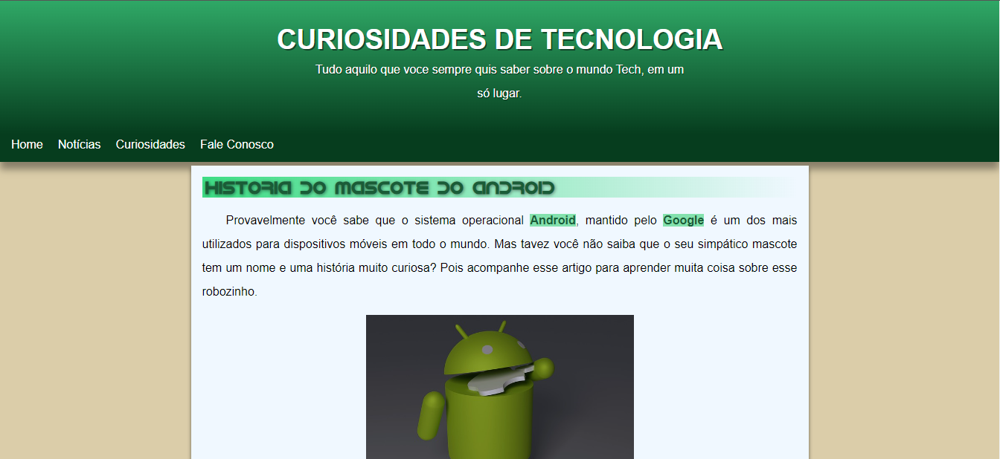
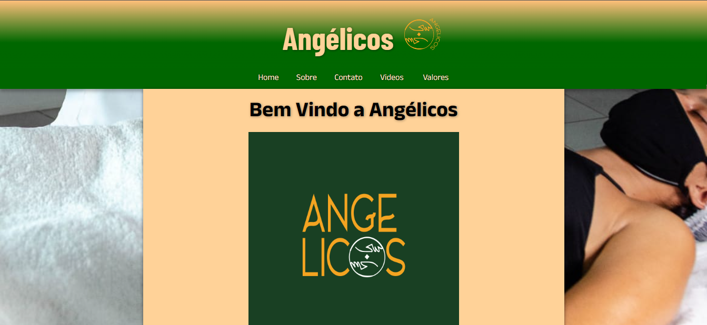
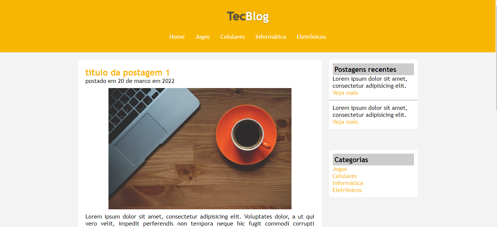

Portifólio Back-end
Sitema CRUD de Hotel com Banco de dados
Esse projeto foi feito em conjunto com uma colega da faculdade (Gabriela Souza) que visa realizar cadastro, leitura, alteração e remoção de clientes de um Hotel.
O codigo foi feito em Java utilizando a classe JDBC para fazer a conexão com o Banco de dados, este projeto foi feito para Entendermos melhor sobre o Banco de dados como chave primeria e estranjeira, cascade entre outros.
E um CRUD feito para treinar e demostrar conhecimento na linguagem Java juntamente com Banco de dados.
Link para o Repositorio: github.com/JoaoVMartinsSJonusan/hotelBdd
Banco em PHP
O sistema foi desenvolvido como forma de estudo utilizando o PHP como back-end recebendo os dados da página.
Link para o Repositorio: github.com/JoaoVMartinsSJonusan/simplesBancoEmPHP
Sistema de Pedidos em Java
O sistema funciona como um cadastro de cliente que fez algum tipo de pedido, pede o item pedido e quantidade, informa a data e logo após faz o cadastro desse pedido.
Link para o Repositorio: github.com/JoaoVMartinsSJonusan/pedidos_java
Portifólio Front-end
Curiosidade de Tecnologia
Um site sobre curiosidades da tecnologia, visando botar em pratica o aprendizado em Responsividade e outros topicos.
Link do site: joaovmartinssjonusan.github.io/Pratica-site-historia-Android/
Site Angelicos
Site da empresa angelicos massoterapia que visa divukgar o trabalho da mesma.
Link do site: joaovmartinssjonusan.github.io/Site-Angelicos/html/index.html
TecBlog
O site funciona como um Blog de tecnologia.
Link do site: joaovmartinssjonusan.github.io/Projeto-TechBlog/HTML/index.html
